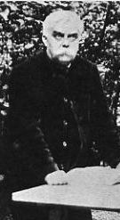

(Léon Bloy; dedicatoria escrita en uno de sus libros)

Francés, 1846 - 1917. (Pronúnciese "leonbluá")
Escritor católico, converso. Un independiente, no muy conocido,
aún en los ambientes católicos.
Prosista exhuberante,
exaltado en las ideas y en el estilo. Famoso por
sus violencias verbales y su intransigencia, cualidades
que lo mantuvieron alejado de las camarillas literarias
e ideológicas de su tiempo, y condenado a la pobreza
durante toda su vida. Tuvo algunos pocos amigos fieles,
entre los que se cuentan Jacques Maritain y su esposa Raissa,
sus ahijados. Admirado -por distintos motivos- por
Georges Bernanos y Jorge Luis Borges. En español, sólo
ha sido editado -obra casi completa- en Argentina, en la
década de 1940.
Escribió dos novelas (El desesperado, 1889; La mujer pobre, 1897), un diario personal en ocho volúmenes que fue publicando en vida ( El mendigo ingrato, 1892-1896; Mi diario, 1896-1900; Cuatro años de cautiverio, 1900-1904; El invendible, 1904-1907; El viejo de la montaña, 1907-1910; El peregrino del absoluto, 1910-1912; En el umbral del apocalipsis, (1912-1915; El portal de los humildes, 1915-1917), relatos (Cuentos descorteses, 1895) y ensayos de temática predominantemente religiosa (La salvación por los judíos, 1892; La sangre del pobre, 1909; La que llora, 1907; El alma de Napoleón, 1912; Exégesis de Lugares comunes, 1913; Meditaciones de un solitario, 1917; En las tinieblas, 1917)
Fue, y sigue siendo, un escritor capaz de impresionar fuertemente a una minoría de lectores, sobre todo con intereses religiosos; pero resulta apenas soportable a la mayoría. Hay que decir que sus novelas son apenas legibles hoy día, y sus afirmaciones están frecuentemente teñidas de arbitrariedades, injusticias e ingenuidades evidentes. Todo lo cual no empaña la admiración y la gratitud que muchos le tenemos. Algunas apreciaciones mías acá y acá.
Links en el sitio:
- Fragmentos varios
- Fragmentos de los diarios
- De "La salvación por los judíos" Fragmento final
- Las doce jóvenes de Eugene Grasset Poemas en prosa sobre doce acuarelas de una almanaque Art Noveau
- Del blog y otros Enlaces a fragmentos copiados en el blog y afines.
- L. Castellani, sobre Léon Bloy